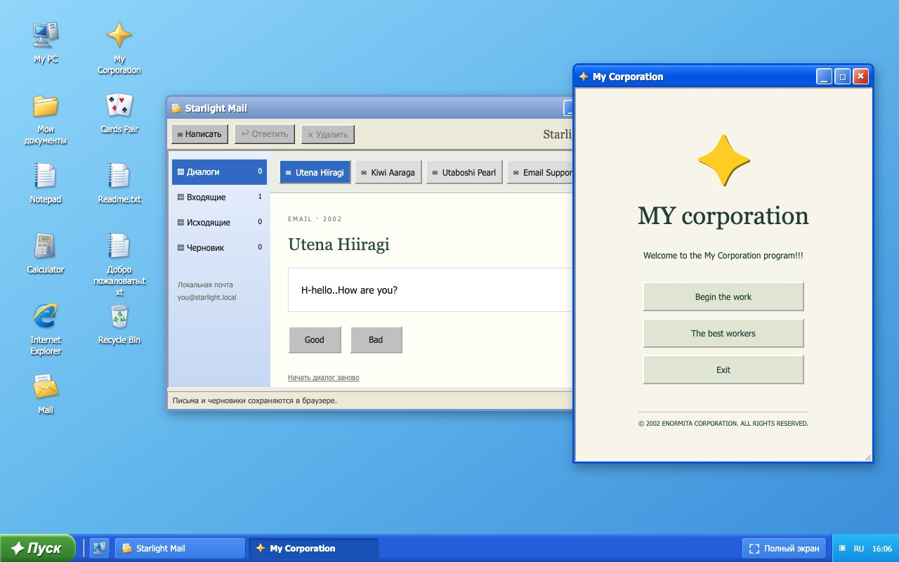

ЗНАКОМОЕ ЧУВСТВО. НОВОЕ ПРИКЛЮЧЕНИЕ.
Выберите
своё время.
Два рабочих стола и один телефон.
Открывайте программы, знакомьтесь и играйте — прямо в браузере.

STARLIGHT OSОткрыть рабочий столStarlight XP
2002Яркие окна, знакомые программы и новые знакомства. Ваш следующий рабочий день.
Почта · Программы · Игры
 THE ORIGINALОткрыть рабочий стол
THE ORIGINALОткрыть рабочий столStarlight 1996
1996Бирюзовый фон, серые кнопки и большие возможности. Всё начинается с «Пуска».
Классика · Файлы · Истории
 POCKET-SIZED WORLDВзять телефон
POCKET-SIZED WORLDВзять телефонLoco Phone
2000-еSMS, любимая музыка и игра в кармане. Время, когда для всего хватало пары кнопок.
Сообщения · Музыка · Starship
Ничего устанавливать не нужно.
Выберите мир — остальное уже внутри.
ОДНО ЛЮБОПЫТСТВО.